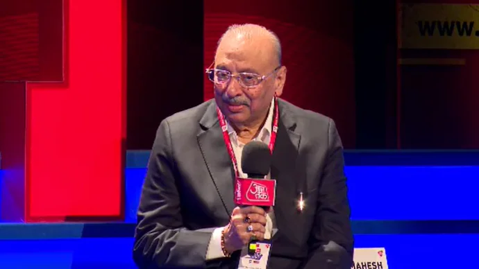

How Mahesh Gupta, an Indian Oil engineer, turned purifier for family into Kent RO
At the India Today Masterclass, Kent RO Systems chairman Mahesh Gupta recalled building a water purifier after both his children got jaundice. When relatives began asking for one, he saw a business in a problem he had set out to solve for his family.
Published on 5 August 2026

Both of Mahesh Gupta’s children came down with jaundice in 1998. The doctor told him to buy a water purifier. Gupta had a question about the machines on sale. They could deal with bacteria, but what about the other impurities in the water? He built a purifier for his family and tried it at home. “It worked well,” Gupta recalled at the India Today Masterclass. Then relatives began asking for one. He made purifiers for them too, and their interest convinced him there was a market for the product in India
THE JOB HIS FATHER WANTED HIM TO KEEP Gupta graduated from IIT Kanpur in 1975 and worked at Indian Oil until 1998. His father, a government employee, was happy to see him join the company. A job in the public sector was what his parents had wanted for him. No one in the family had started a business.
FROM FAMILY REQUESTS TO A BUSINESS His relatives already knew why Gupta had built the purifier. As Kent began selling to a wider market, he had to show customers what it could do and give them a way to get it serviced. Gupta said the company used demonstrations to explain how its purifiers worked and pointed to its patented technology, designed to retain minerals during reverse osmosis. At the Masterclass, he turned that experience into a question for anyone thinking of starting a business. “What’s the agenda of your business?” he asked. Was the aim to make money, build up the company’s valuation and sell it, or give customers a product they couldn’t already buy? Gupta said he believed a business had a better chance of lasting if it solved a problem customers actually had. Asked what he would work on if he were starting out today, Gupta said cleaner energy and water scarcity. “Water crisis is a real crisis,” he said. Some people can use five buckets for a bath, he pointed out, while others struggle to get even one. The problem that led him to build his first purifier was what was in the water his family drank. The one he would look at today starts with how much water a family can get at all. - Ends